×

"Cada trazo es un
ritual de transformación"
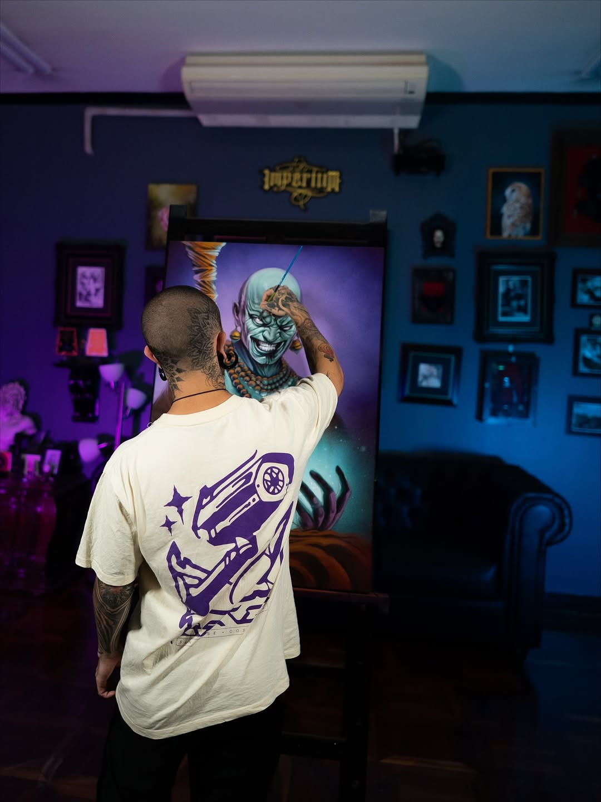
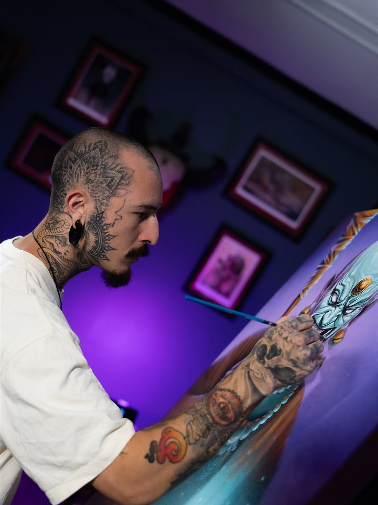
Desde San José, Costa Rica, Froy Vargas ha convertido el arte del tatuaje en un ritual sagrado de transformación personal. Cada sesión es más que tinta sobre piel — es un proceso de cambio, de marcar momentos que definen quiénes somos.
Con más de 508 obras documentadas y una comunidad de más de 35,800 seguidores que siguen su evolución artística, Froy ha desarrollado un estilo inconfundible que fusiona el realismo técnico con la oscuridad poética del Dark Art.
Especializado en retratos hiperrealistas, cráneos con flores, figuras femeninas, y bocetos de animales, cada pieza lleva la firma de un artista que entiende que el cuerpo es el lienzo más íntimo que existe.
Obras recientes — cada trazo, una historia
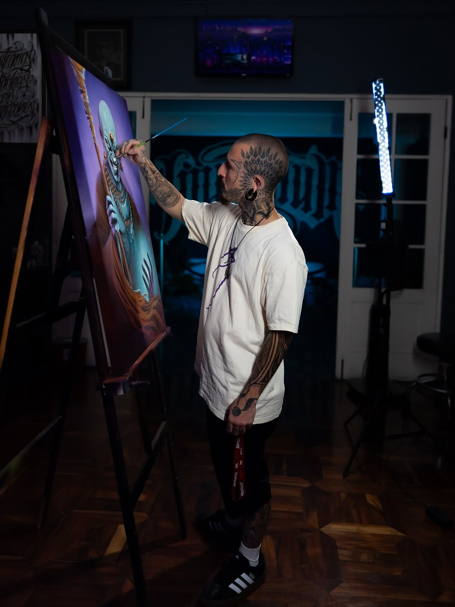
Realismo · Black & Grey
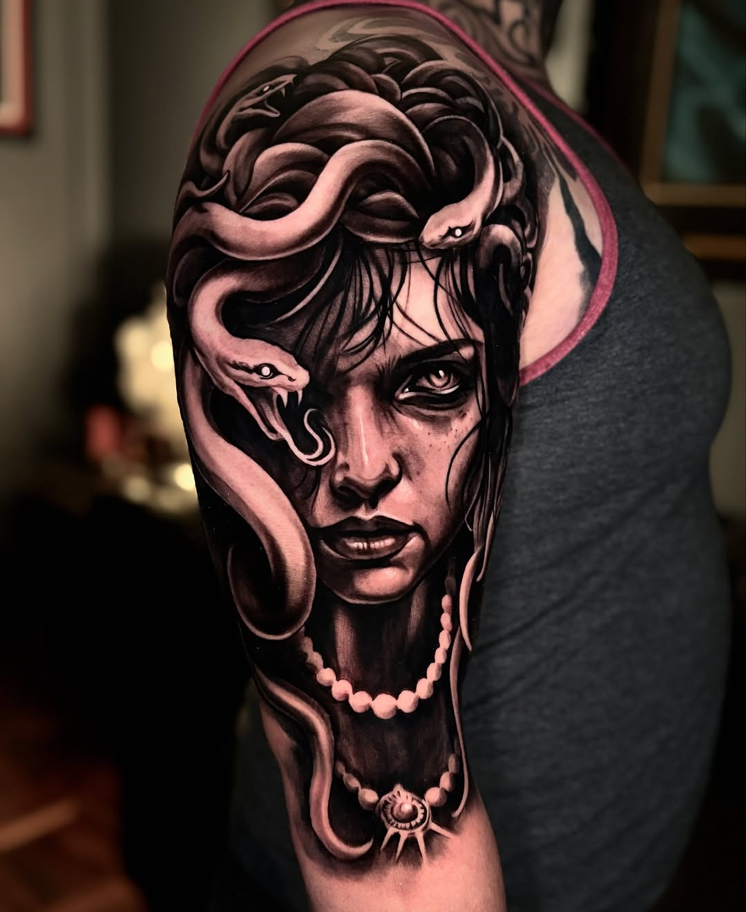
Dark Art · Black & Grey
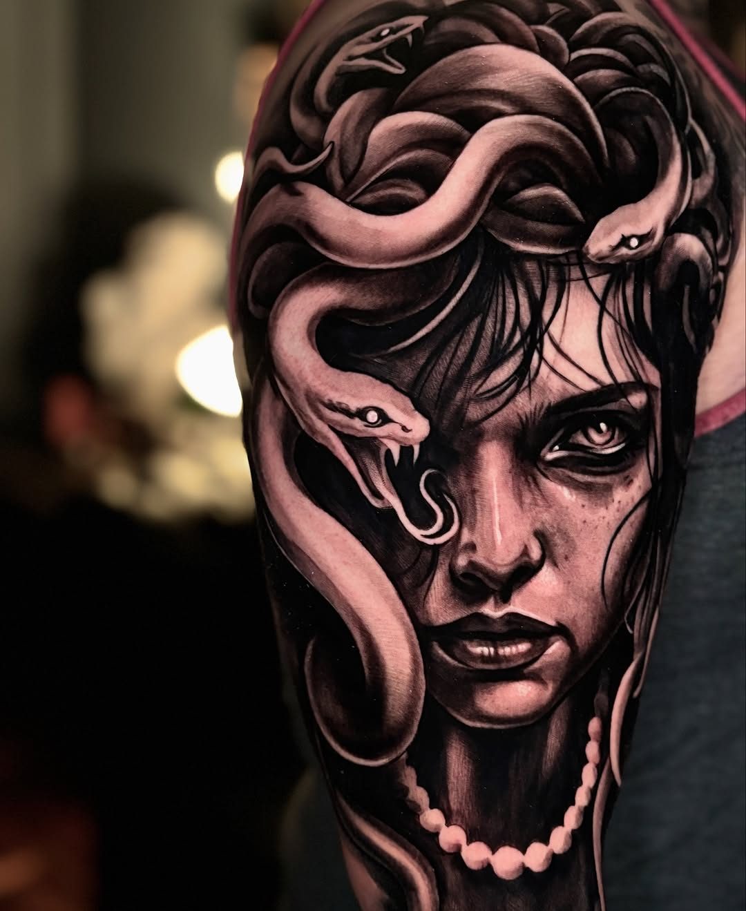
Sketching · Animales
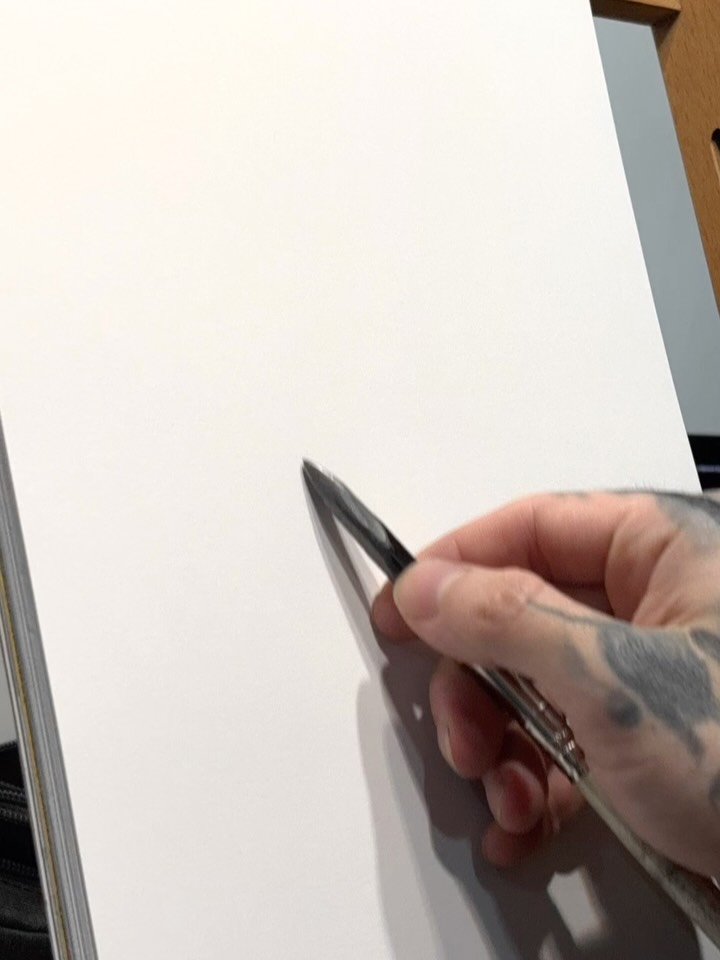
Realismo · Hiperrealista
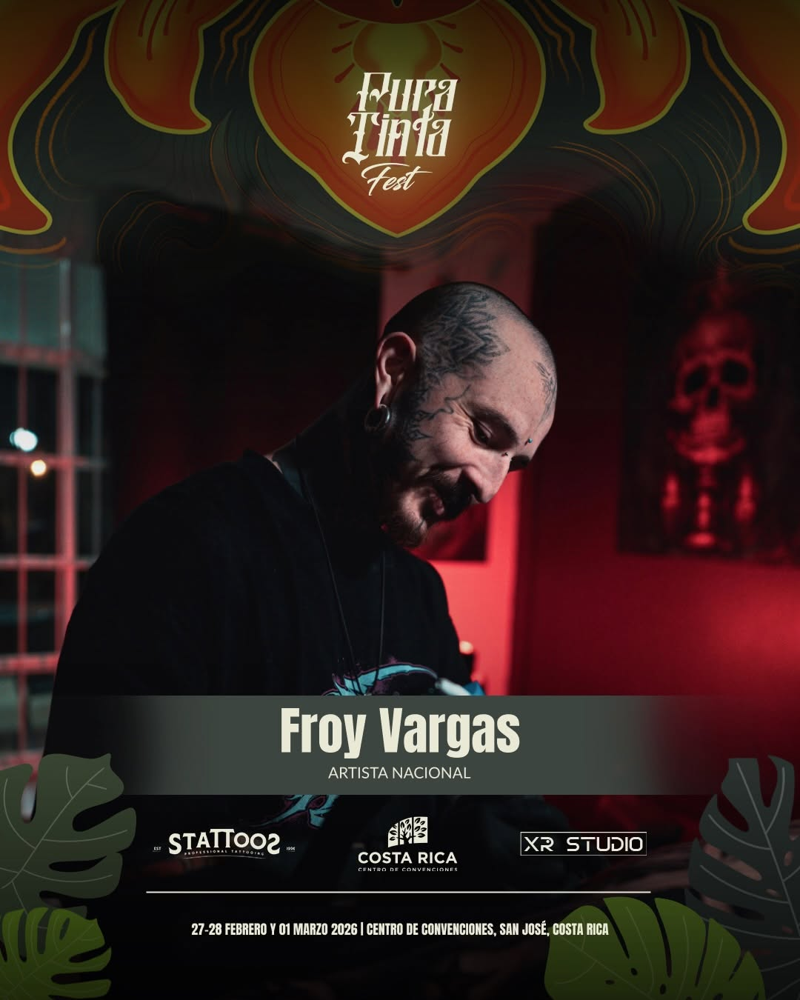
Dark Art · Sombras
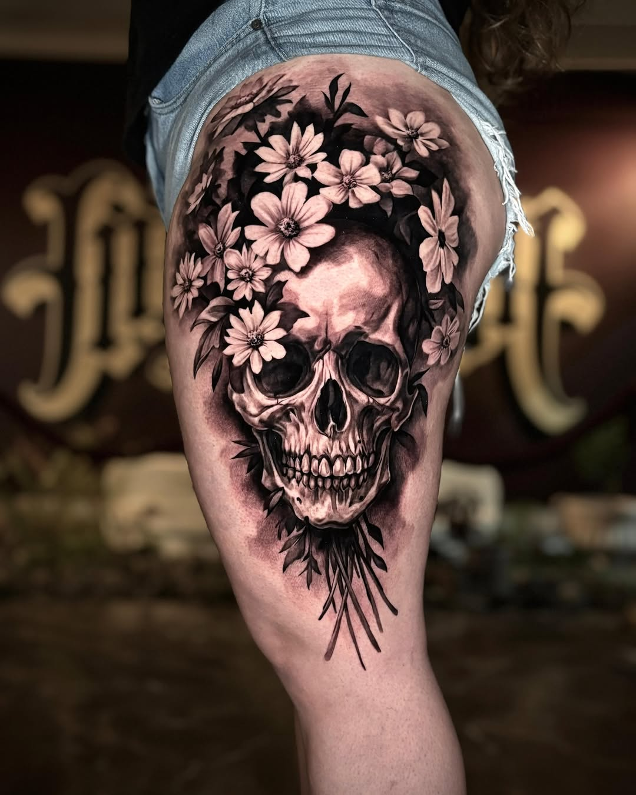
Sketching · Detalle
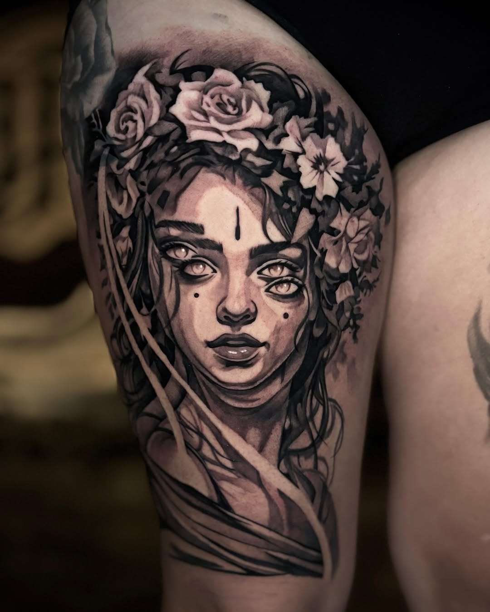
Realismo · Dark Art
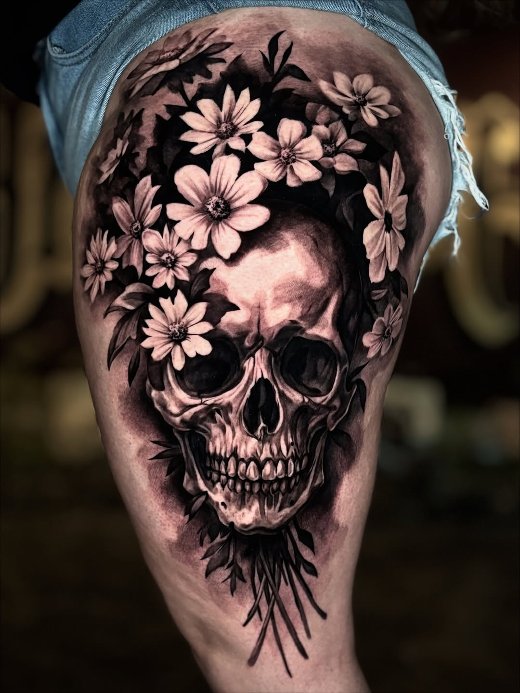
Realismo · Black & Grey
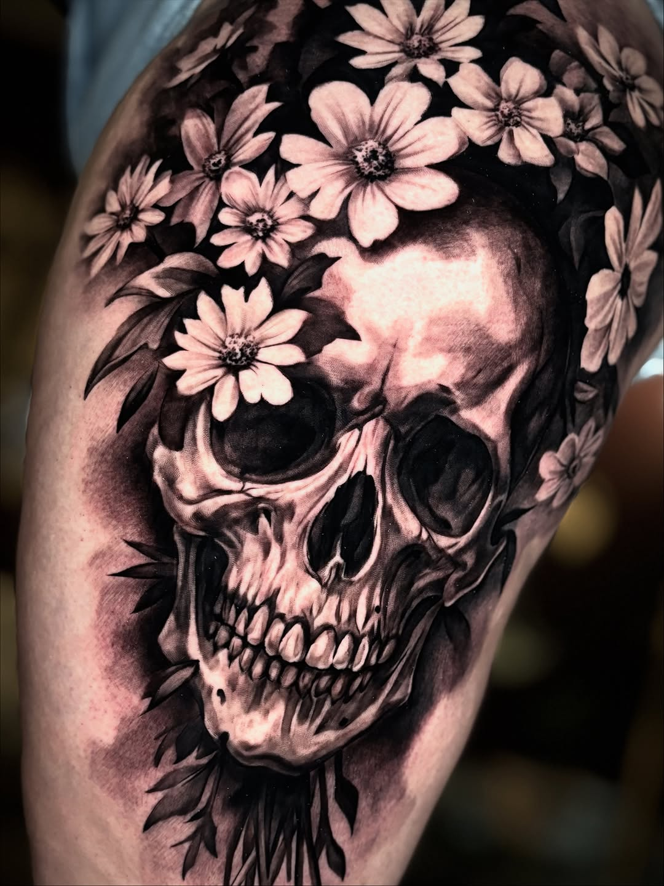
Dark Art · Sketch
Arte personalizado para tu transformación
Diseños únicos creados especialmente para ti. Llevamos tu idea del concepto a la piel con precisión artística.
ConsultarEspecialidad en retratos hiperrealistas en Black & Grey. Personas, figuras iconicas o conceptos en su máxima expresión artística.
Reservar Cita¿Tienes un tatuaje que quieres transformar? Convertimos viejas marcas en nuevas obras de arte con técnicas avanzadas de cover-up.
ConsultarBocetos de animales, figuras oscuras y dark art. Un estilo único que mezcla el trazo suelto con la profundidad del sombreado.
ConsultarConversamos sobre tu idea, el tamaño, la ubicación y el presupuesto. Sin compromiso. Un espacio para explorar tu visión antes de comprometerte.
Iniciar ConsultaLos retoques en piezas realizadas por Froy tienen condiciones especiales. Consulta disponibilidad y políticas de retoque.
ConsultarDepósito: Se requiere depósito para confirmar cita. Consulta montos por WhatsApp.
Ubicación: San José, Costa Rica — Dirección exacta al confirmar cita.
Pagos: Efectivo (₡ colones) y SINPE Móvil aceptados.
Testimonios de quienes vivieron la transformación
"Froy capturó exactamente lo que tenía en mente. El retrato de mi abuela quedó tan perfecto que lloré cuando lo vi. Es magia lo que hace con el sombreado."
"El ambiente del estudio es increíble, muy profesional. Mi cover-up quedó mejor de lo que esperaba — transformó algo que odiaba en una obra de arte."
"Desde la consulta hasta el resultado final, Froy fue atento y creativo. El proceso de diseño fue colaborativo y el resultado es exactamente el ritual que quería en mi piel."
"El cráneo con flores que me hizo es simplemente brutal. Black & grey perfecto, las flores tienen vida propia. Ya estoy planeando mi próximo tatuaje con él."
"Vine desde Liberia solo para que Froy me tatuara. Vale cada kilómetro. El sketch del lobo que me hizo es inigualable — línea, textura, todo perfecto."
"Profesional, talentoso y genuinamente apasionado. Froy no solo tatúa — crea arte. Mi sesión fue una experiencia completamente transformadora, tal como promete."
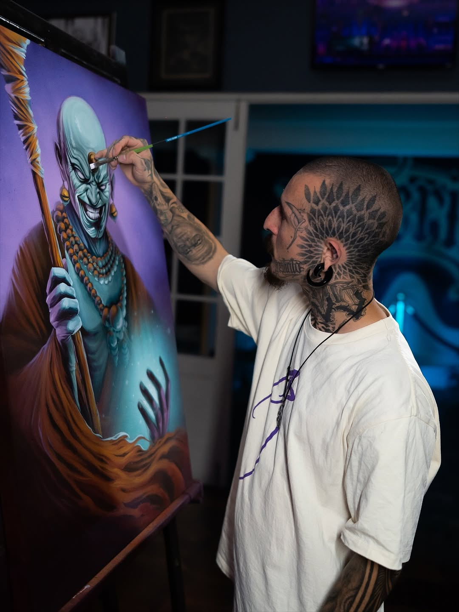
¿Listo para que tu historia quede grabada en piel? Escríbeme y coordinamos tu cita.
¿Tienes una idea? ¿Quieres saber más sobre mi trabajo? Escríbeme — el primer paso de tu transformación comienza aquí.
+506 XXXX-XXXX — La forma más rápida
@froy.art
San José, Costa Rica
Lun–Sáb: 10:00 – 19:00 (CST)